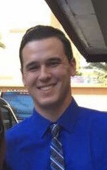

About Me
Full Stack Developer with a background in electronics and business management, utilizing skills to build a responsive and friendly user experience. Graduate of the Coding Boot Camp at the University of California Riverside with skills in MySQL, MongoDB, Express, and proficiency with Javascript, Node, and React to create a highly responsive design. Enthusiastic about solving problems and issues that impact the user experience, with an emphasis on creating designs that are built and optimized for mobile. Goal for each project is to have a positive and memorable effect on the user, create a productive environment, and a practical design. Working on both the UI and UX, recently collaborated with a team of four on an app to reunite lost pets with their owners, with the aim of bringing these families back together. Constantly looking to use my technical skills and passion for mobile first design to make a footprint in this technologically driven world.